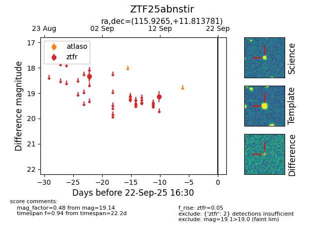

FINK: ZTF25abnstir
Lasair: ZTF25abnstir
ALeRCE: ZTF25abnstir
ZTF25abnstir (ztf,fink)
equatorial (ra, dec) = (115.9265,+11.81378)
galactic (l, b) = (208.0583,+16.87653)

last ztfr=19.14
2 ztfr detections